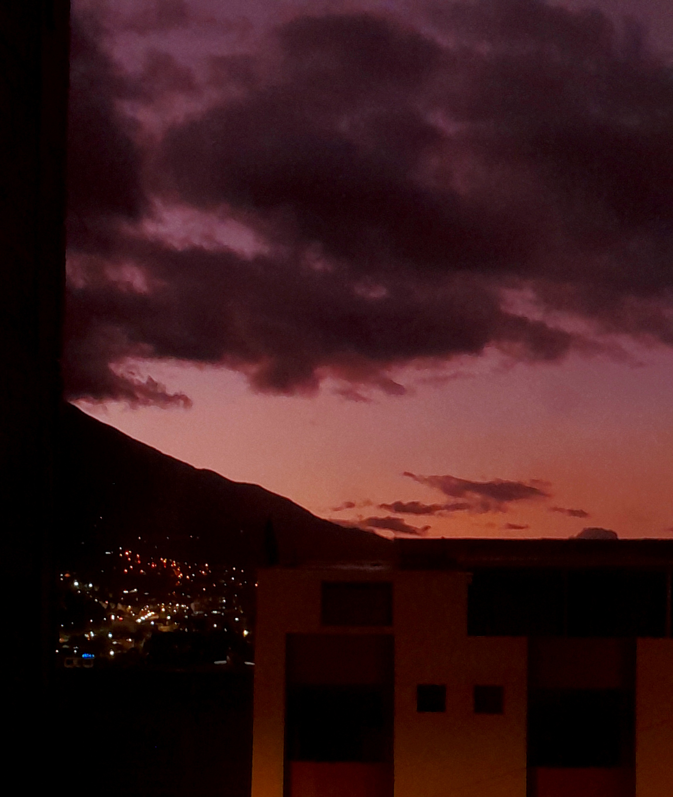
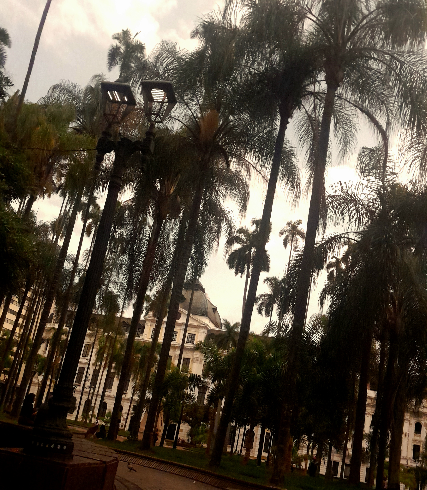
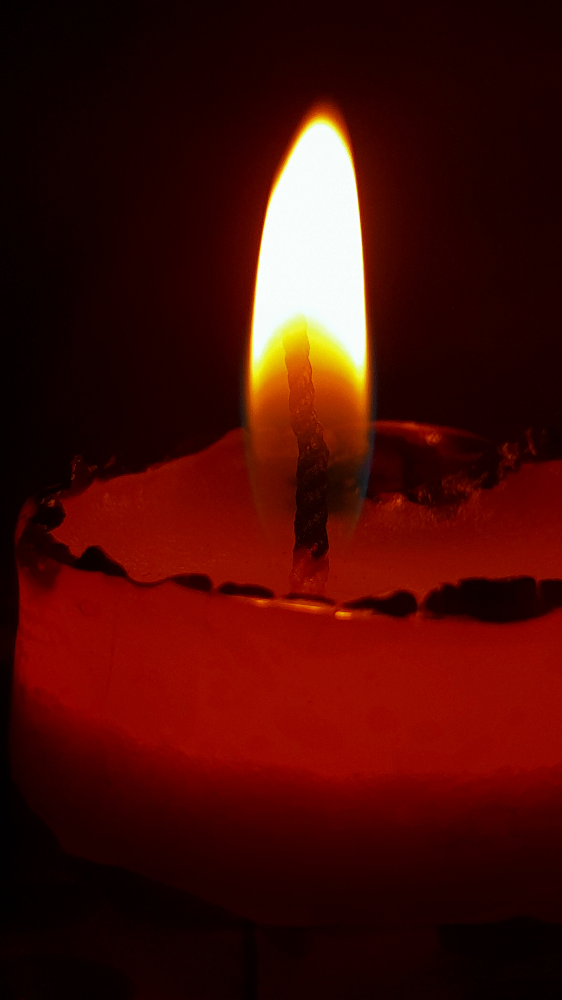

*
¿Qué propósito hay? Algún día lo sabré… Algún día; mañana, hoy en esta noche, o quizá en los más absurdos sueños de no ver más la luz…
Leer

Neguentropía
Estuve en un lugar en donde solo fui carne y huesos; un lugar tangible, en donde el alma solo se reflejaba en los movimientos corporales…
Leer

2025
Me siento pequeña, vulnerable a todo… Cómo puedo sentirme sofocada en mi propia piel, me estoy ahogando con mi sangre…
Leer
ESTRELLA
La resignación ante tu ausencia sería un insulto a nuestros recuerdos: a la nostalgia de tu piel sobre la mía…
Leer